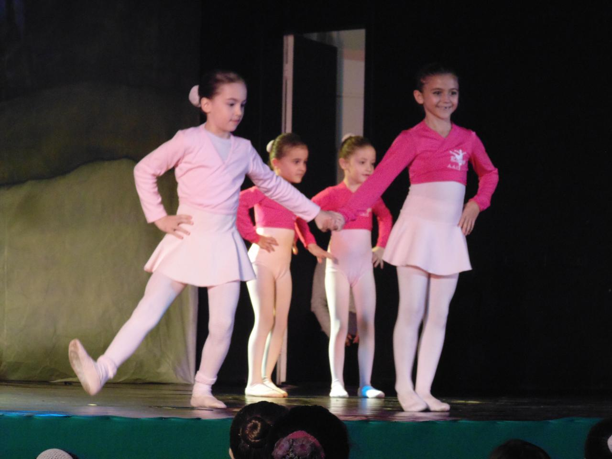
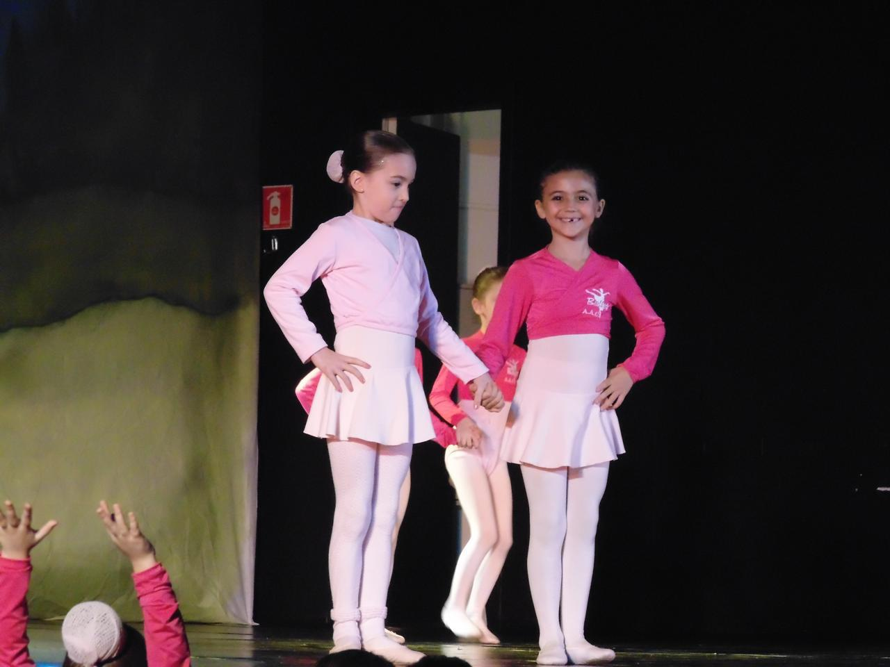
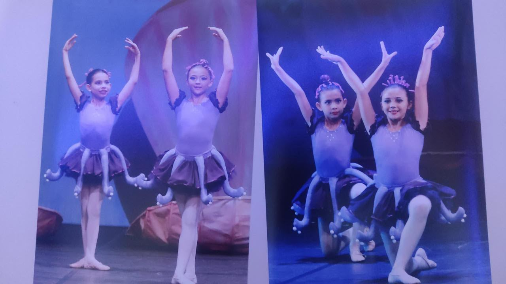

Jazz Dance & Ballet: The Art of Movement and Expression
Dance has always been my creative outlet and a way to express emotions that words cannot capture. Both jazz and ballet have taught me grace, discipline, and the beauty of moving with purpose. From the structured elegance of ballet to the rhythmic freedom of jazz, each style brings its own unique lessons and challenges.
Starting with ballet at a young age provided me with a foundation of technique, posture, and coordination. The classical nature of ballet taught me that even in artistic expression, discipline and practice are essential. Every position, every movement has meaning and requires dedication to master.



Jazz dance brought a new dimension to my artistic journey. The freedom to improvise, to feel the music, and to express individuality through movement opened up a whole new world of possibilities. Jazz taught me that rules can be broken with purpose, and that emotion and energy are just as important as technique.


Through dance, I've learned about teamwork, dedication, and the power of art to connect people. Whether performing on stage or practicing in the studio, every moment has shaped who I am. Dance is not just a sport or an art form for me; it's a language through which I express myself and connect with others on a deeper level. The combination of ballet's grace and jazz's energy has created a beautiful balance in my life, reminding me that both structure and freedom are necessary for growth.